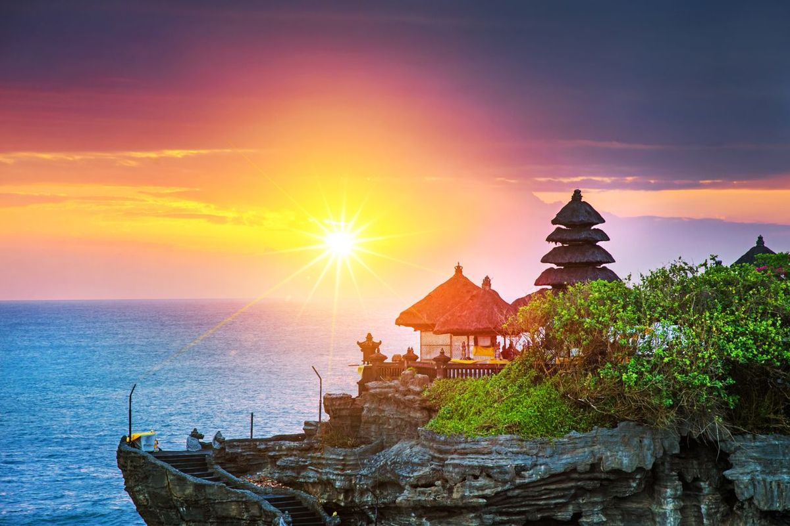

INSPIRASI PERJALANAN
Destinasi pilihan
Kenali tempat wisata dan lokasi pada peta.

Bali
Bali dikenal dengan pantai, pura, seni, dan tradisi yang masih terjaga. Pengunjung dapat menikmati pemandangan alam sekaligus mengenal budaya setempat.
Informasi wisata resmi ↗
Yogyakarta
Yogyakarta menawarkan wisata sejarah dan budaya, mulai dari kawasan candi hingga pusat seni dan kuliner.
Informasi wisata resmi ↗
Raja Ampat
Raja Ampat di Papua Barat Daya terkenal dengan lanskap pulau karst serta keanekaragaman hayati lautnya. Jaga kebersihan dan ekosistem ketika berkunjung.
Informasi wisata resmi ↗Peta lokasi Bali
Peta interaktif menggunakan Google Maps.